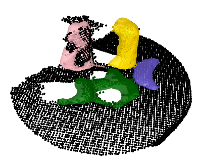

2024 Nov 22
Last time, we talked about trying to move towards a paper. The method wasn’t quite working last time, but I was pretty sure I could get it working this week. I didn’t have too much time to write the weekly write-up because I was mostly focused on writing in the overleaf. Thus, this week’s write-up is pretty barebones
So I got the method working earlier in the week, then I tried to install some code in my env and it messed the env up, which caused CLIP and other stuff to be weird, so hopefully I can get that fixed over the weekend. Here is an image of a reconstruction:

Overleaf: I worked quite a bit on the overleaf doc for the potential paper. I still have some questions about it that I want guidance on:
I also had some ideas that I wanted to try out:
Here is my plan for the experiments section this week:
Speed of Method: I got the method running on the GPU (kind of, I lowkey messed up something in my conda env and CLIP was malfunctioning). I timed different parts of the method, here are a couple of those times:
Thesis: I have to turn in a senior thesis by the end of this semester. So, I trasferred some sections of the V-PRISM paper over to it and messed with formatting. Here is my current draft: